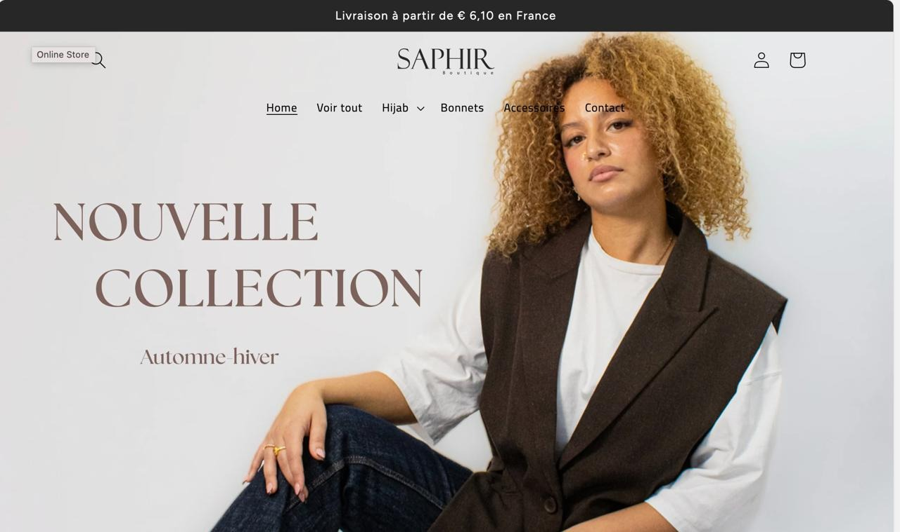
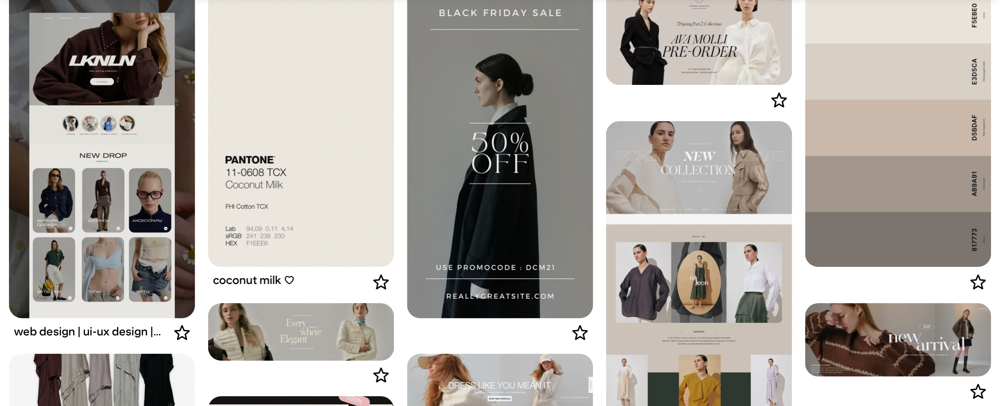
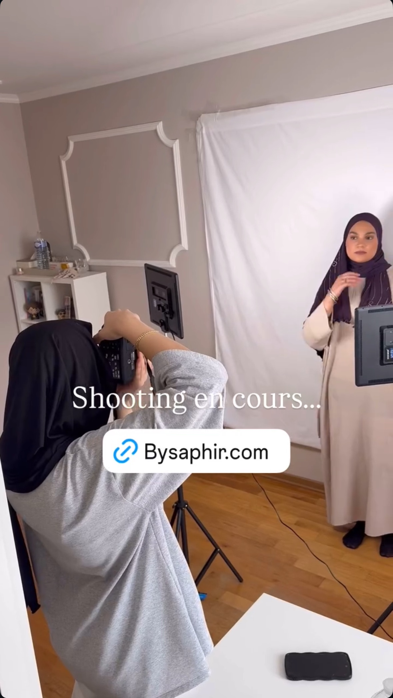
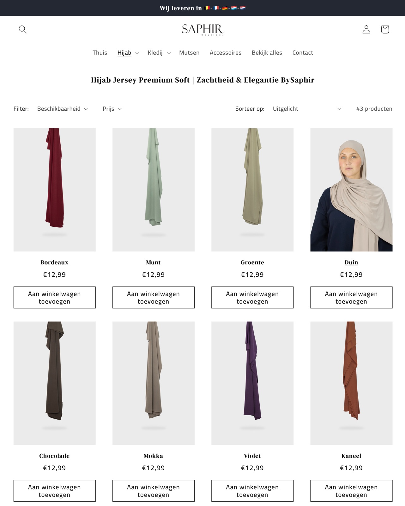
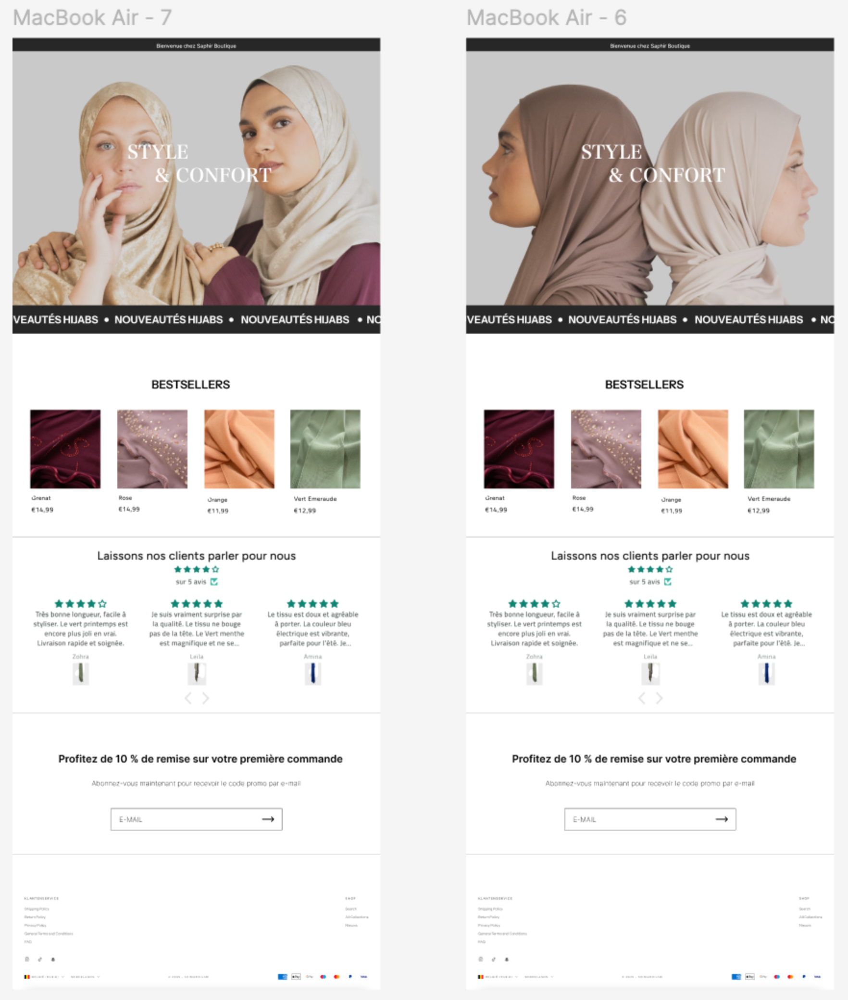

BYSAPHIR.COM
Projectdetail
BYSAPHIR.COM
Een modecontentproject gericht op een verzorgde visuele identiteit in fotografie, sociale media, websitecontent en productpresentatie.
De website is momenteel in onderhoud.

Projectintro
Overzicht
Proces
Van concept tot content.
Een modepresentatie bouwen die verfijnd en draagbaar aanvoelt en visueel aansluit bij de identiteit van het merk.
Ik bekeek modest-fashionfotografie, editoriale e-commerce en elegante online boetieks om een duidelijke visuele toon te bepalen.
De richting focuste op minimalistische layouts, zachte neutrale tinten en beelden die stijl, helderheid en productaantrekkingskracht in balans brengen.
Ik werkte aan modefotografie, socialemediavisuals, websitecontent, productbeheer en Shopify-contentupdates.
Het eindresultaat was een coherentere modeaanwezigheid met sterkere beelden en een strakkere digitale presentatie.
Ik leerde hoe belangrijk consistentie is wanneer fotografie, productinformatie en websitepresentatie allemaal samenwerken.
Beelden
Visueel proces.

Ik zocht inspiratie op Pinterest en modewebsites om een moderne en minimalistische esthetiek te vinden voor de visuals en de website.

Ik begon foto's te maken met modellen en experimenteerde met verschillende poses, belichting en composities om content voor het merk te creëren.

Ik fotografeerde de producten en voegde ze zelf toe in Shopify, met titels, prijzen, beschrijvingen en details, zodat de collectie er rustig en uniform uitziet.

Voor ik de homepage in Shopify aanpaste, ontwierp ik ze eerst in Figma. Ik werkte twee varianten uit met een andere hero-foto, met bestsellers, klantreviews en een nieuwsbriefblok.
Ik heb de homepage van de website vernieuwd, nieuwe producten toegevoegd en gewerkt aan de uiteindelijke visuele content voor de website en sociale media.
Reflectie
Persoonlijke groei
Een van de uitdagingen in dit project was het evenwicht vinden tussen esthetiek en praktische contentnoden, vooral wanneer beelden, website-updates en productpresentatie op één lijn moesten blijven. Ik leerde holistischer na te denken over een merkervaring, niet alleen als visuals maar ook als structuur en consistentie. Dit project hielp me groeien in creative direction, contentplanning en zelfvertrouwen om een vollediger digitaal modeverhaal vorm te geven.